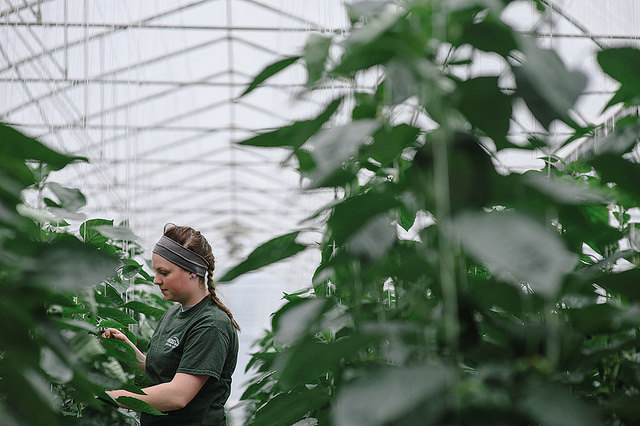

ODI Futures: Why linked open data can help boost stifled innovation in agronomics
In the run-up to our ODI Futures event on agriculture, in partnership with Defra, Robert Allen, event panelist and co-chair of Agri-Tech East’s ‘big data’ group talks about the role open data can play in improving agronomic understanding of crop performance
 UK agriculture needs a framework for linking different agronomic data sources together. CC BY 2.0, uploaded by [University of the Fraser Valley](https://www.flickr.com/photos/ufv/15226413197/in/photolist-pcvmat-nzbVX1-hji5R8-6gcuHE-njE13V-oRcqxM-nj6ca3-95LZXw-95HXC2-6eS8xc-b4NbvV-5viDzx-bo1aSM-gfD7x-dQog6Y-BeDiBS-8xbLM8-BpaZE8-9bhW2y-9dqJ18-6LN4sB-6KNWVh-7hzju9-dgN1MA-fKBu2c-ojR5rj-7ifeaS-675U4J-dF823m-bJXxkz-rsNtDB-9XtGTY-2tLPt9-fz1d3x-hnC6AP-hnDEg4-hnDDEe-hnDDee-hnCsLq-hnDC9i-hnDBBM-hnCz9o-o3Cz8L-enW71b-8rE58A-brBawW-dtbL6s-noBcjM-7fywKP-647JVA “University of the Fraser Valley").
The agricultural data sector has become increasingly prevalent in recent years, driven by high-profile acquisitions and substantial venture capital investments.
The scale and complexity of agriculture makes it an attractive market for ‘big data’ technologies, and many believe that agricultural data will be key to creating the sustainable food production practices required to meet rising global food demands, while mitigating against predicted environmental changes in the 21st Century.
‘Agricultural data’ is a generic term, and is often, confusingly, used when discussing the various sub-sectors in ag-data – for example, data relating to machinery performance, operational practices, financial performance or agronomy. However, while they are interrelated, they are different, and offer differing scope for open data applications.
‘Agronomy’ describes the physiological response of crops to management practices and environmental conditions. Applying agronomic knowledge in commercial farming operations will help to improve agricultural productivity.
Issues of data integration between existing data systems and inefficient data management are currently limiting the scalability and commercial viability of new technologies for delivering improved agronomy. This is arguably stifling innovation and the development of new products.
In the UK, open data exists to create relevant reference datasets to remove these barriers to progress. For example, a recent Innovate UK project established the potential for using radar satellite data to measure the development of potato crop canopy; an important component of irrigation management and yield prediction tools. It was identified that a key variable in analysis was the orientation of planting, as surface roughness is a significant component in the raw radar signal.
Issues of data integration between existing data systems and inefficient data management are currently limiting the scalability and commercial viability of new technologies for delivering improved agronomy.”
The concept of field metrics goes beyond orientation; elevation, slope and aspect can be derived from Ordnance Survey (OS) contour data or Environment Agency LIDAR data. These have applications in irrigation management, identifying high risk fields for erosion and can be used for understanding variation in crop performance. Currently, for many systems, these basic variables are collected manually every year despite the potential for them being pre-calculated.
At a broader scale it is important for UK agriculture to establish a framework for linking the many different agronomic data sources together. This is not an argument for the data to be stored in a single central system, rather that a framework should exist by which data can be aggregated and linked over time – similar to how the national addressing dataset from the OS can be used to link land and property data.
The national field boundaries dataset can provide a consistent national unique identifier for field land parcels across England. Adoption of this type of data infrastructure would allow rapid integration of data from different ag-data systems.
This is important, as many users are currently reluctant to either change to new service providers or expand their data ‘toolbox’; primarily because moving historical data between suppliers is too onerous and setting up a new system often requires re-entering their existing data.
This is a big stumbling block in delivering the power of data to the farm. The recently established Agrimetrics Centre would be the ideal organisation to deliver the benefits of open-data reference datasets to the farming sector. It has the operational capacity to develop the required protocols and infrastructure to deliver the products to market and then maintain data currency in the future. Furthermore, it has the mandate to operate nationally and across agricultural sectors which is unique.
Successful delivery into, and uptake by, ag-data service providers and end users (i.e. farmers and growers) will require the following: first, the ag-data sector to recognise that whilst it would be a significant alteration to existing business models the commercial upsides are significant and real. Second, confidence in the grower base that concerns around data security and privacy are explicitly considered in any product development.
Robert Allen is a data scientist, co-chair of Agri-Tech East’s ‘big data’ special interest group and 2014 Nuffield Farming Scholar. Follow @rja_allen on Twitter.
If you have ideas or experience in open data that you'd like to share, pitch us a blog or tweet us at @ODIHQ.